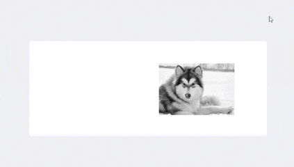

URL TO USER INTERFACE
TRIGGERS
Object 1 -
Main image positioned slightly to the right of the page’s center.
Hover On
Hover Off
Click
Object 2 -
Arrows located on the left-center and right-center side of the display.
Hover On
Hover Off
Click
Object 3 -
The "X" close icon positioned in the top right corner of the display.
Hover On
Hover Off
Click
RULES
Object 1
Hover On
Cursor changes to a hand icon, signaling the image is clickable.
Hover Off
Cursor returns to default arrow.
Click
Main image enlarges and centers in 0.5s with a dark overlay fading in.
Navigation arrows and close icon fade in within 0.15s.
Object 2
Hover On
Navigation paw rotates 15° in 0.35s; cursor changes to hand.
Hover Off
Paw returns to original position in 0.35s.
Click
Right arrow advances to next image (slides left in 0.5s). Left arrow goes back (slides right in 0.5s).
Indicator dots update to reflect active image.
Object 3
Hover On
Cursor changes to hand icon.
Hover Off
Cursor returns to default arrow.
Click
X icon rotates 15° and moves slightly along y-axis (0.15s), fading out the overlay and restoring original view.
FEEDBACK
Hovering or clicking gives motion feedback — rotations, fades, and image transitions reinforce interactivity.
LOOPS & MODES (Meta-Rules)
The lightbox acts as a mode overlaying the gallery. It dims the background, disables other interactions, and introduces navigation controls until closed.
UPDATED OBJECTS
Object 1

Object 2

Object 3